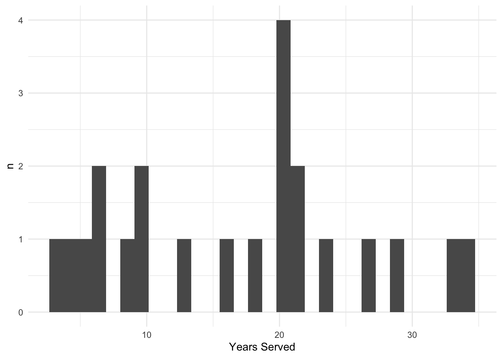
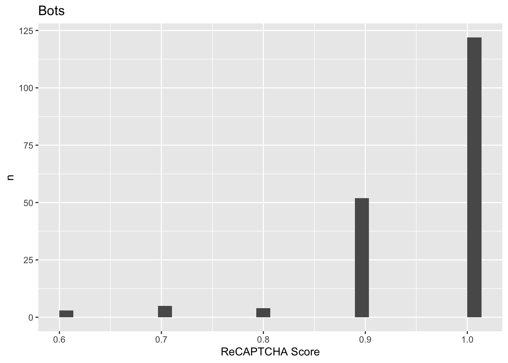
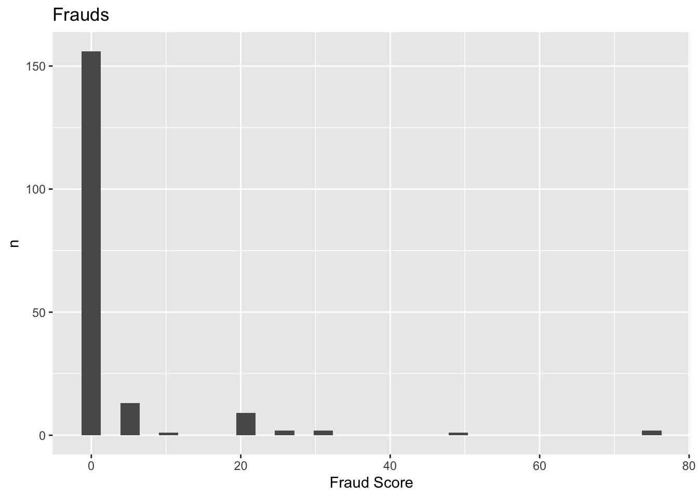
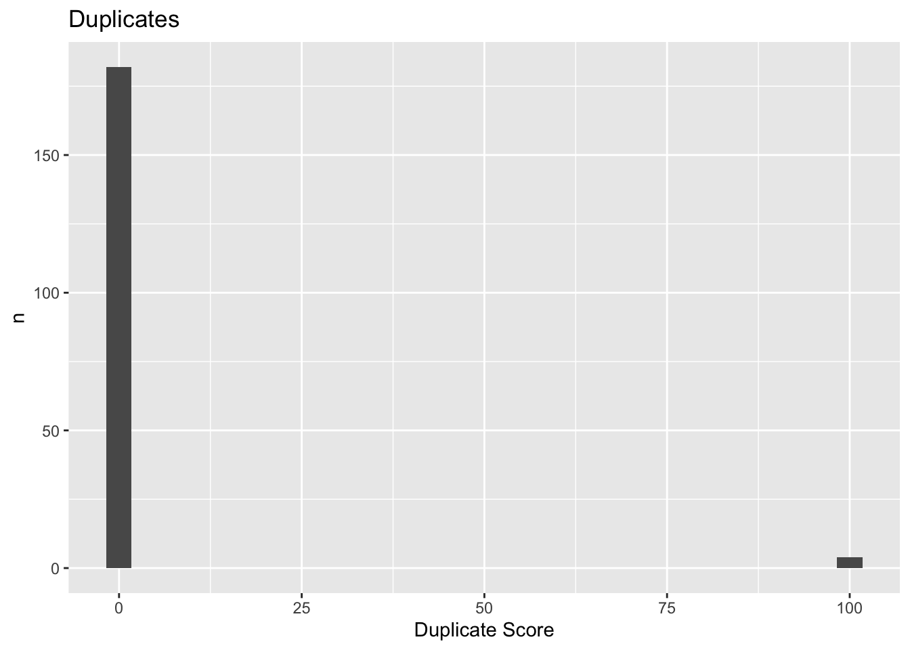
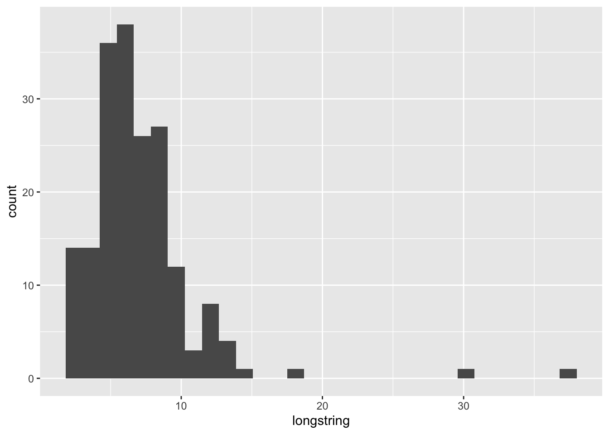
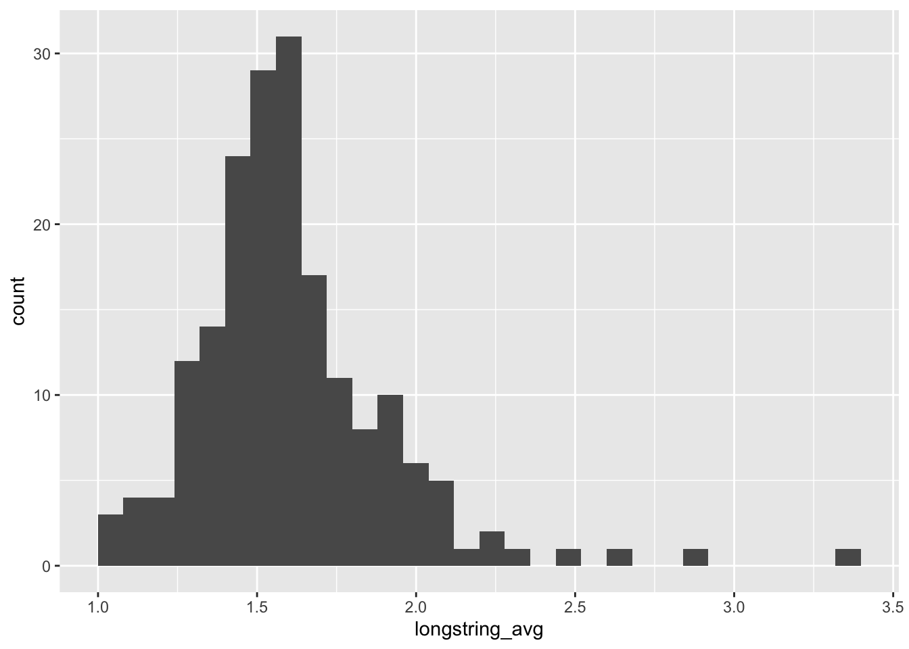
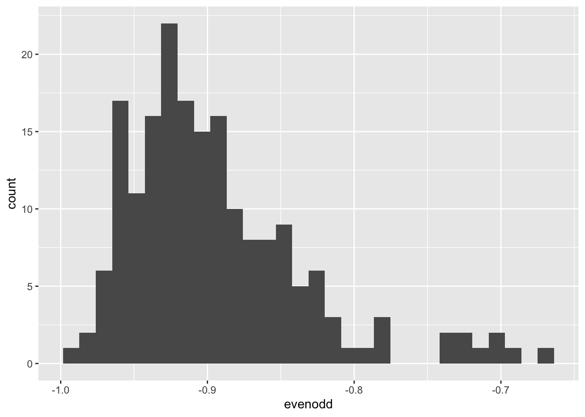
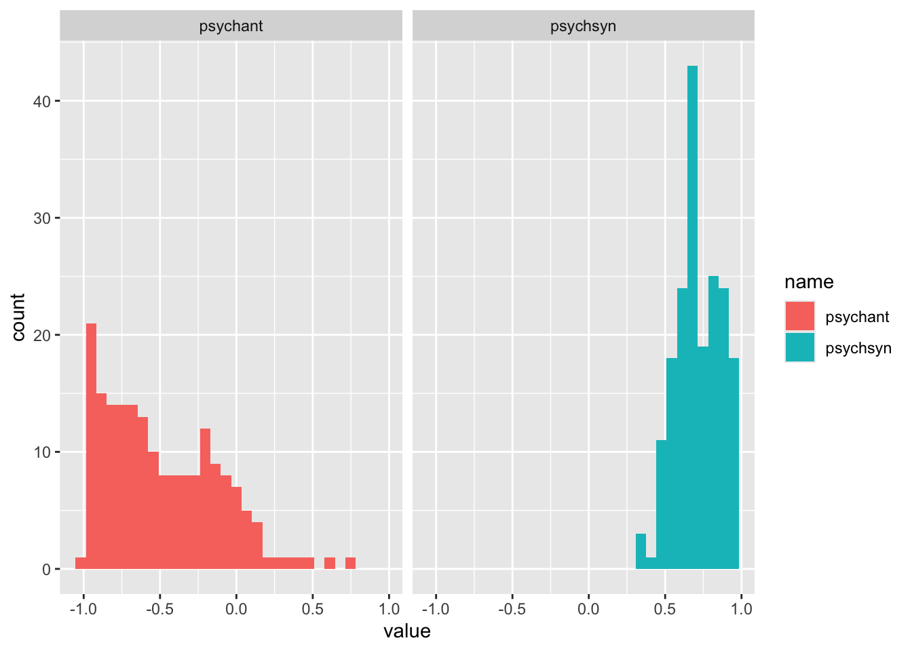

Cleaning and Screening Messy Real-World Survey Data
You analyze the data you have, not the data you want
Data Cleansing
Author
Thomas Hodges
Published
June 4, 2025
Project Summary
I have conducted dozens of surveys with employees, students, and community members. A common issue with surveys is data quality. People skip answers, they lie, they straight-line, they respond in a random pattern, they take the wrong version of surveys. I’ve seen it all.
Luckily there are tools to screen and clean bad survey data. For this project, I used cutting-edge methods to detect poor-quality survey responses. I then repeated the process for two additional surveys.
The results are clean data sets that have been used for several scientific publications. Additionally, I am drafting a paper that outlines the methods in an accessible way.
Find the complete analysis code on GitHub and a walkthrough below.
Skills Demonstrated
R Programming
Data Quality Assurance
Survey Design and Analysis
Real-World Applications:
People Analytics
Employee Health and Well-being
Employee Engagement and Satisfaction surveys
Walkthrough
What’s the problem: Real-World
Let me walk you through the problem and solution. Imagine you just completed a survey with your employees, customers, or another group of stakeholders. Here I have a survey with a group of veterans. You might be quick to import your data and start to analyze it. Using R, let’s download the data and look at it:
library(tidyverse,quietly =TRUE)
── Attaching core tidyverse packages ──────────────────────── tidyverse 2.0.0 ──
✔ dplyr 1.1.4 ✔ readr 2.1.5
✔ forcats 1.0.0 ✔ stringr 1.5.1
✔ ggplot2 3.5.2 ✔ tibble 3.3.0
✔ lubridate 1.9.4 ✔ tidyr 1.3.1
✔ purrr 1.0.4
── Conflicts ────────────────────────────────────────── tidyverse_conflicts() ──
✖ dplyr::filter() masks stats::filter()
✖ dplyr::lag() masks stats::lag()
ℹ Use the conflicted package (<http://conflicted.r-lib.org/>) to force all conflicts to become errors
data <-read_csv("data/veterans.csv")
Rows: 234 Columns: 371
── Column specification ────────────────────────────────────────────────────────
Delimiter: ","
chr (21): StartDate, EndDate, IPAddress, RecordedDate, ResponseId, Distribu...
dbl (343): Status, Progress, Duration (in seconds), Finished, LocationLatitu...
lgl (7): RecipientLastName, RecipientFirstName, RecipientEmail, ExternalRe...
ℹ Use `spec()` to retrieve the full column specification for this data.
ℹ Specify the column types or set `show_col_types = FALSE` to quiet this message.
data %>%select(StartDate, ResponseId, pcl_1, pcl_2, pcl_3) %>%slice_head(n =7)
We have 234 rows. In this case, that’s supposed to be 234 US military veterans who each responded to the survey 1 time.
The participants were recruited online, so we cannot be sure that these are all veterans. To ensure these people we veterans, we asked two questions. To participate, you have to have previously served in the military, but not currently be on active duty:
Did you serve in the United States military?
Are you now separated from the military? (e.g., discharged, released from active duty, transferred to the Inactive Ready Reserve)
data %>%count(military_screener)
# A tibble: 2 × 2
military_screener n
<dbl> <int>
1 0 1
2 1 233
data %>%count(veteran_screener)
# A tibble: 3 × 2
veteran_screener n
<dbl> <int>
1 0 19
2 1 214
3 NA 1
Luckily, no one ever lies on the internet. But let’s assume they did. Maybe there are people out there who spend all day looking for surveys to take. Maybe that’s because some surveys offer money or compensation for responses.
How can we tell who is legit? We can build some security into the survey with a “validity check.” We ask a question that only a legit respondent knows. Or, we ask a series of questions and test if people are logically consistent.
In this case, we asked participants which military rank was higher, and provided them with two military ranks. For anyone in the military, it should be immediately obvious which rank is higher and lower. For people outside of the military, this is a little more difficult. not impossible, but not immediately obvious. That’s perfect. We want it to be so easy that 100% of legit people can answer it accurately. This doesn’t mean the liers can’t answer it correctly, but it does give us one way to weed them out.
Which military rank is higher, private or lieutenant?
How many people got the answer wrong?:
data %>%filter(!is.na(validity_check)) %>%count(validity_check) %>%mutate(perc = n /sum(n))
# A tibble: 2 × 3
validity_check n perc
<dbl> <int> <dbl>
1 0 14 0.07
2 1 186 0.93
14 of the 200 people who said they were veterans did not answer a simple question testing their basic military knowledge. For an online survey, that’s grounds for screening your response. Let’s go ahead and filter based on the screening questions and validity checks.:
data <- data %>%filter( age_screener ==1, military_screener ==1, veteran_screener ==1, validity_check ==1 )data %>%nrow()
[1] 186
We can also test for logical inconsistencies or impossibilities.
For example, we might compare the rank that participants claimed to have achieved with the number of years they claimed to have served. If they report a really high rank in too few years, then they are lying about something. For example, it is VERY impressible although not impossible to reach the rank of E-7 in 7 years. This is the so-called “7 in 7.” Anyone who claims 7 in 7 on an online is probably lying, but they might be telling the trust. But anyone who claims to have reached 7 in fewer years is almost certainly lying. Did we have this problem in our data?
data %>%filter(pay_grade =="E-7 to E-9") %>%ggplot(aes(years_served)) +geom_histogram() +labs(x ='Years Served', y ="n", "Pay Grade E-7 to E-9") +theme_minimal()
`stat_bin()` using `bins = 30`. Pick better value with `binwidth`.

As a final note, you should also check the bot detection, duplicate, and fraud stats that are available from survey hosts like Qualtrics: “A score of Less than 0.5 means the respondent is likely a bot.” https://www.qualtrics.com/support/survey-platform/survey-module/survey-checker/fraud-detection/#RelevantID
“A score greater than or equal to 30 means the response is likely fraudulent and a bot.”
A score of greater than or equal to 75 means the response is likely a duplicate. https://www.qualtrics.com/support/survey-platform/survey-module/survey-checker/fraud-detection/#RelevantID )
#Q_RecaptchaScore >= .5data %>%ggplot(aes(Q_RecaptchaScore)) +geom_histogram() +labs(title ="Bots", x ="ReCAPTCHA Score", y ="n")
`stat_bin()` using `bins = 30`. Pick better value with `binwidth`.

#Q_RelevantIDDuplicateScore < 75data %>%ggplot(aes(Q_RelevantIDFraudScore)) +geom_histogram() +labs(title ="Frauds", x ="Fraud Score", y ="n")
`stat_bin()` using `bins = 30`. Pick better value with `binwidth`.

#Q_RelevantIDFraudScore < 30data %>%ggplot(aes(Q_RelevantIDDuplicateScore)) +geom_histogram() +labs(title ="Duplicates", x ="Duplicate Score", y ="n")
`stat_bin()` using `bins = 30`. Pick better value with `binwidth`.

Dirty Data: Careless survey responding. Examples using R visualizations
Even once you screen out the cheaters and bots, survey data can still have problems. People skip answers, they lie, they straight-line, they respond in a random pattern, they take the wrong version of surveys. Depending how the data was collected, some of these problems can be worse than others.
We can detect two kinds of careless responding: longstringing and random responding.
Longstringing
There are 4 kinds of straightlining to watch out for. This is a combination of 2 factors: longest string or average string; and reverse-coded or not.
First, there are two ways to calculate long strings, either as the longest string legnth or as the average string length. The average string is useful to detect careless responders who occasionally vary their response. The longest string is useful to catch people who do not vary their response in the slightest.
Second, longstring can be calucaled on data that has been reverse scored or that has not yet been reverse scored. The idea here is that some respondents who long string might pay attention to the valence of the question, looking for times that the wording switches from positive to negative, and varying their responses in accordance. Therefore, it might sense to calculate longstring with both reverse-scored and non-reverse scored answers. Each can be used to detect a slightly different type of careless survey responding behavior.
# Longstring## Calculate longstring and average string without reverse scoringdata <- data %>%select(biis_1:cos_16) %>%# select only the scale items after PCL and MIOStransmute(longstring = careless::longstring(.),longstring_avg = careless::longstring(., avg =TRUE)[,2] ) %>%bind_cols(data)## Plot the long strings. Without the previous removals, there are 3 outliers for longstring (>15) and one for average string (>5)data %>%ggplot(aes(longstring)) +geom_histogram()
`stat_bin()` using `bins = 30`. Pick better value with `binwidth`.

data %>%ggplot(aes(longstring_avg)) +geom_histogram()
`stat_bin()` using `bins = 30`. Pick better value with `binwidth`.

Random Responding
Also known as Christmas-Treeing, to respond randomly to a survey means to select each answer at random, without regard for answering truthfully.
While there might be a few reasons that people respond randomly to a survey, one of the main reason is probably to finish the survey quickly. Additionally, they may seek to avoid detection for their carelessness, thus opting not to use straightlining.
The tools to detect random responding are more varied than straightlining.
## Arrange the data and calculate the metricdata <- data %>%select(mios_1:cos_16) %>%# select only the scale itemsselect(-mios_9) %>%# issue with original did not include all 14 itemsselect(-starts_with('bipf')) %>%# Drop the inventoryselect(# MIOS Shame mios_1, mios_3, mios_7, mios_8, mios_12, mios_13, mios_14,# MIOS Trust mios_2, mios_4, mios_5, mios_6,#mios_9, mios_10, mios_11,# DRDI Dysfunction drdi_2, drdi_4, drdi_5, drdi_8, drdi_10, drdi_13, drdi_14,# DRDI recovery drdi_1, drdi_3, drdi_6, drdi_7, drdi_9, drdi_11, drdi_12,everything() ) %>%transmute(evenodd = careless::evenodd(x =., # nItems in each subscale in order:factors =c(7, # MIOS Shame6, # MIOS Trust7, # DRDI Dysfunction7, # DRDI Recovery20, # PCL10, # BIIS Harmony7, # BIIS Blended6, # MCARM Purpose 4, # MCARM Help3, # MCARM Civilians3, # MCARM Resentment5, # MCARM Regimentation7, # WIS Private Regard7, # WIS Interdependent3, # WIS Connection3, # WIS Family4, # WIS Centrality4, # WIS Public Regard3, # WIS Skills12, # SCC 6, # MPSS8, # SSS8, # COS8) # COS ) ) %>%bind_cols(data) # Add the results back to the original data.
Warning: There was 1 warning in `transmute()`.
ℹ In argument: `evenodd = careless::evenodd(...)`.
Caused by warning in `careless::evenodd()`:
! Computation of even-odd has changed for consistency of interpretation
with other indices. This change occurred in version 1.2.0. A higher
score now indicates a greater likelihood of careless responding. If
you have previously written code to cut score based on the output of
this function, you should revise that code accordingly.
## Plot the even-odd correlation. The outliers are around -.50, but that is a fairly strong correlation, which indicates careful responding. I wont remove any based on this. data %>%ggplot(aes(evenodd)) +geom_histogram()
`stat_bin()` using `bins = 30`. Pick better value with `binwidth`.

Cutpoints
Data science is full of decisions. Some people don’t want you to know that. They want you think that data is objective. That data speaks for itself. That the numbers don’t lie.
It’s true that data can be used to make more objective decisions, but that doesn’t mean a whole lot of (potentially subjective) decisions have to be made just to analyze the data in the first place.
When it comes to screening and cleaning survey data, the biggest decision is the cutpoint to use. That is, we can calculate longstring metrics and even-odd correlation, but at what value of these measures do we determine a response is bad enough to throw it out?
The truth is, we do not know for sure. These are “unsupervised” models: we do not have a variable that tells us if they are truly a careful responder or not. Still, we have to make a decision, and we want it to be reasonable and well justified.
My approach was to adopt cutpoints that were hard to dispute. Take for example psychometric synonyms and antonyms. Let’s visualize these scores>:
# Psychometric Synonyms/Antonyms ------------------------------------------------## set the cutoffscutoff_psychsyn <-0# set the cutoff to screen results for psychometric synonymscutoff_psychant <-0# set the cutoff to screen results for psychometric antonyms## calculate the metric data <- data %>%select(mios_1:cos_16) %>%# select only the scale itemstransmute(psychsyn = careless::psychsyn(., critval =0.60), # calculate the psychometric synonyms using a critical value of r = .60psychant = careless::psychant(., critval =-0.60) # calculate the psychometric antonyms using a critical value of r = -.60 ) %>%bind_cols(data) # add the psychometrics synonym/antonym scores to the data
Warning: There were 2 warnings in `transmute()`.
The first warning was:
ℹ In argument: `psychsyn = careless::psychsyn(., critval = 0.6)`.
Caused by warning in `stats::cor()`:
! the standard deviation is zero
ℹ Run `dplyr::last_dplyr_warnings()` to see the 1 remaining warning.
data %>%select(psychsyn, psychant) %>%pivot_longer(everything()) %>%ggplot(aes(value, fill = name)) +geom_histogram() +facet_wrap(~name)
`stat_bin()` using `bins = 30`. Pick better value with `binwidth`.

Order of Operations: Putting it all together
Besides setting cutpoints, a second major decision to make is how to combine different screening tools.
Curran advises using a “many small hurdles” approach. By that, he suggests using lots of if different tools, e.g., longstring, even-odd, psychometric synonyms/antonyms – but being lenient with the cutoff. They idea is that a lenient cutoff will only remove the responses that are most likely to be bad. In more technical terms, the small hurdles approach is about minimizing false negatives (data we throw away but shouldn’t have). If we would make the hurdles more stringent, then we are likely to catch more bad data at the expense of throwing out good data.
While the small hurdles approach makes sense, there is still little guidance about how to implement it. For example, should longstringers be removed first or last? I ask because the order of operations matters. If you remove respondents for longstringing, then calculate even-odd correlation, then the even-odd metric will be different that if the longstringers were not removed. This is especially a problem when the metrics makes use of the entire sample, such as when calculating psychometric synynonyms and antonyms. It is also a problem when using relative criteria to remove responmses. For example, by removing anyone with a longstring score 2 standard deviations above the mean.
In the end, I had to make a decision and do something that was reasonable, even if there was no precedent.
![]()